education
MS in Mechanical Engineering
Pittsburgh, PA
Carnegie Mellon University2015 - 2016
Concentration in Robotics
BS in Mechanical Engineering
Pittsburgh, PA
Carnegie Mellon University2012 - 2016
Graduated with University Honors, College Honors, Department Honors
Work History
Boston, MA
Mechanical Engineer2016 - Present
- Early stage startup designing a novel minimally invasive surgical device to treat various heart rhythm disorders; resulted in successful treatment of over 130 patients.
- Responsible for R&D and V&V of several critical systems in a novel ablation catheter, resulting in 5 patent families.
- Project lead for an accessory diagnostic catheter and accessory tubing kit.
Chicago, IL
Design Engineer Intern2015
- Designed PCB shields for an unreleased modular mobile phone and interfaced with suppliers for cost reduction.
- Conducted accelerated life testing and design characterization tests for display lens and rear housing.
- Developed an empirical model that successfully predicts the risk of glass shattering based on lens cutouts.
Global Foundries
Malta, NY
Industry Engineer Intern2014
- Supported capacity expansion in Fab 8.1 via Yarbrough SW.
- Programmed and installed heat control systems for multimillion dollar IC manufacturing equipment.
- Worked in Class-1 Cleanroom (ISO 3).
Johns Hopkins Center for Talented Youth
Lancaster, PA
Resident Assistant2013
- Mentored and organized summer activities for talented students at Johns Hopkins University.
Projects
Cana Diamonds, LLC
Co-founder2019 - Present
- Designed and prototyped polishing disk to save costs.
- Resulted in 1 patent family.
Magnetically Controlled Microrobots
Honors Research2015 - 2017
- Designed and prototyped sub-centimeter scale robots controlled by MRI for noninvasive operations.
- Resulted in publication in IEEE ICRA 2017.
Camera Systems Lead2015 - 2016
- Worked in the CMU/Astrobotic team in Google’s Lunar XPrize, a $30 million competition to land a robot on the moon.
- Led a team of 6 in designing and prototyping a camera system optimized for lunar conditioning.
Graduate Research2014 - 2016
- Designed, manufactured, and programmed robot, achieved functional locomotion and manipulation.
- Tested and optimized robot for reliability and efficiency 2017.
Suspension2014 - 2016
- Designed and manufactured novel lightweight A-Arms using carbon fiber.
- Resulted in 1st place in design at Formula Hybrid 2015.
Granular Packing Prosthetic Socket
Biomechatronic Design2015
- Prototyped a prosthetic socket designed for mass production that uses granular packing to provide a custom fit, combating patient discomfort.
Smart Compression Sock
Soft Robotics2015
- Designed a smart compression sock to combat deep vein thrombosis, funded by Emirates Airline.
- Prototyped sock using Nitinol shape-memory alloy for silent and portable compression.
Flying Wing Drone
Student Undergraduate Research Grant2015
- Authored and won a $1000 SURG grant to develop a fast and efficient drone, funded by Boeing.
- Designed and prototyped a quadcopter that transforms into a flying wing that takes advantage of lift to increase speeds and decrease energy consumption.
Publications & Patents
Publications
Erin, O., Giltinan, J., Tsai, L., Sitti, Metin. (2017) “Design and actuation of a magnetic millirobot under a constant unidirectional magnetic field.” IEEE, ICRA 17058289
Patents
Catheter Sensing and IrrigationGranted December 2019
US15/584,904, EP17722967.1A, PCT/US2017/030575, CN201780041499.2A, JP2018558328A
Lesion FormationPatent Pending
US15/584,323
Pulsed RF AblationPatent Pending
US15/584,533, US15/584,549, PCT/US2017/030535
Catheter InsertionPatent Pending
US15/584,080, EP17723204.8A, PCT/US2017/030492
Multiple Zone Pad Conditioning DiskPatent Pending
US16/582,452, TW108134870, KN10-2019-0119170, CN201910917992.7
System comprising a catheter and an expandable electrode and a method of forming a lesionPatent Pending
EP17733199.8A, PCT/US2017/030518
About Me
Woo wee, what should I put here? I have no idea!
My interests are quite varied. I don't know what to say about that.
Activities
Harvard Square Food Pantry
Volunteer2018 - Present
- Weekly volunteer rescuing surplus food and distributing to local families in need of support.
Mentoring
Personal2017 - Present
- Built one-on-one mentor relationships with children in families of need, encouraging them to reach their full potential.
- Guided mentees through finishing high school, SAT preparation, and college application process.
American Institute of Aeronautics & Astronautics
Co-founder, Treasurer2014 - 2016
- Co-founded CMU AIAA chapter to address a growing campus interest in aerospace.
- Earned several grants for research projects on drone delivery systems.
InstructorFall 2014
- Instructor at a Father-Son Club, teaching basic electronics and physics, along with technical skills such as soldering.
Newman Club
President2012-2016
- Significantly enhanced campus presence and student activities, resulting in increase in club membership and club fundraising
Knights of Columbus
Director of Communications2012 - 2017
- Redesigned communication channels and membership recruitment to increase attendance and activities.
- Elected for other positions, including Chancellor and Warden.
Projects
Quadcopter Drone
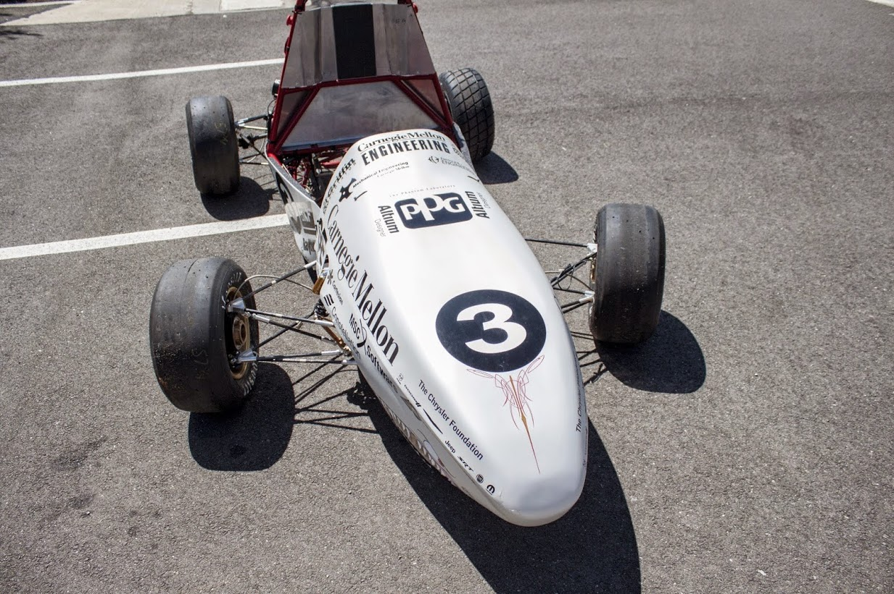
Mirror Cube
Blog
Why would I have a blog? What would I even write?
Affera, Inc.
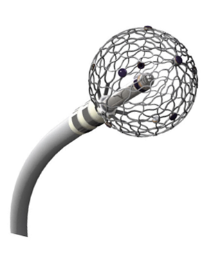
Our primary device is a novel expandable ablation catheter used for treating heart rhythm disorders. The 9mm sphere collapses through a 8F insertion site on the patient’s thigh. The device is capable of global location tracking and capturing local electrocardiograms, allowing physicians to create a map of the heart’s condition before and after treatment. In our initial 3 months of first-in-human trials, our device has had remarkable success (98.7% of procedures successful, distributed across 71 patients, with no serious adverse events. Average procedure duration was shortened by an order of magnitude when compared to conventional devices). As of December 2019, we have successfully treated over 130 patients.
As a early team member at Affera, Inc., my role evolved significantly over time as our system has evolved. I have had significant involvement in the following mechanical components of our device:
- The irrigation nozzle in an ablation catheter is responsible for keeping blood flowing and preventing the formation of clot. The component has a high risk, with failures potentially resulting in stroke, fistulas, and death. I was responsible for the design, testing, and verification of the component.
- The spherical cage on our device is the novel component that allows our device to effectively deliver energy to the cardiac tissue. I was responsible for characterizing various iterations of the design and identifying areas of risk that this novel approach brings, but not for the design itself. These characterizations and risk analyses were integral to iterating the design.
- The valve crossing tool is the component that allows us to get our expandable electrode through a small access port in the patient’s thigh. I was responsible for the design, testing, and verification of the assembly.
- The tubing set is an accessory to our device, and provides a reliable feed of saline on demand, while interfacing with a pump. I was responsible for this accessory, including defining hazards and specifications, design, testing, verification, and scaling for production. Risks relating to this component failure can include clots, stroke, and death.
- There is also an accessory device, of which I am responsible for the entire lifecycle of (including project definition, design and development, and verification).
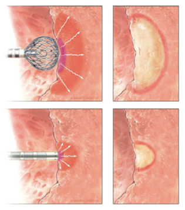
I was also responsible for the following non-mechanical portions of our device:
- The design and verification of our packaging, including the sterile barrier, labeling, and boxing. While not a glamourous role, reliably keeping a thin packaging film intact throughout various sterilization, vibration, temperature, and humidity cycles is very challenging, and is an area that gets significant scrutiny by the FDA.
- Our RF electrode is a significant departure from the rest of the market, so the energy delivery profile of our device needed characterization tuning from the ground up. This is an extremely sensitive area, where the wrong setting will often result in ineffective procedure, steam pops, or death for the patient. I was responsible for testing and optimizing the power delivery scheme to reliably, safely, and quickly create lesions of a targeted size.
- A significant portion of the design verification of our device, from defining risks and specifications, including writing and validating test protocols and methods, and up through training and overseeing the execution and reporting.
All details shared above are limited to what has been publicly released in the following:
- Kitamura, Takeshi, et al. "Larger and Deeper Ventricular Lesions Using a Novel Expandable Spherical Monopolar Irrigated Radiofrequency Ablation Catheter. " Journal of Cardiovascular Electrophysiology, vol. 30, no. 9, 17 July 2019, pp. 1644–1651., doi:10.1111/jce.14089.
- Reddy, Vivek Y. "Rapid Pulmonary Vein Isolation using an Irrigated Temperature Controlled Lattice Ablation Catheter: A First in Human Clinical Experience." Heart Rhythm Society Annual Scientific Sessions, San Francisco, CA. 9 May 2019. Poster presentation.
- Barkagan, Michael, et al. "Expandable Lattice Electrode Ablation Catheter." Circulation: Arrhythmia and Electrophysiology, vol. 12, no. 4, 2019, doi:10.1161/circep.118.007090.
- Haines, David E. "Can an Expanding Lattice Electrode Catheter Expand Our Success in Catheter Ablation?" Circulation: Arrhythmia and Electrophysiology, vol. 12, no. 4, 2019, doi:10.1161/circep.119.007306.
- Affera, Inc. “Affera Announces World's First Successful Focal Pulsed Field Ablation in Patients.” PR Newswire, 19 Dec. 2019, www.prnewswire.com/news-releases/affera-announces-worlds-first-successful-focal-pulsed-field-ablation-in-patients-300977901.html
Formula SAE
This racecar was designed and built throughout the 2014-2015 academic year. The car won 1st place in design at Formula Hybrid, and took 3rd place at Formula Electric.
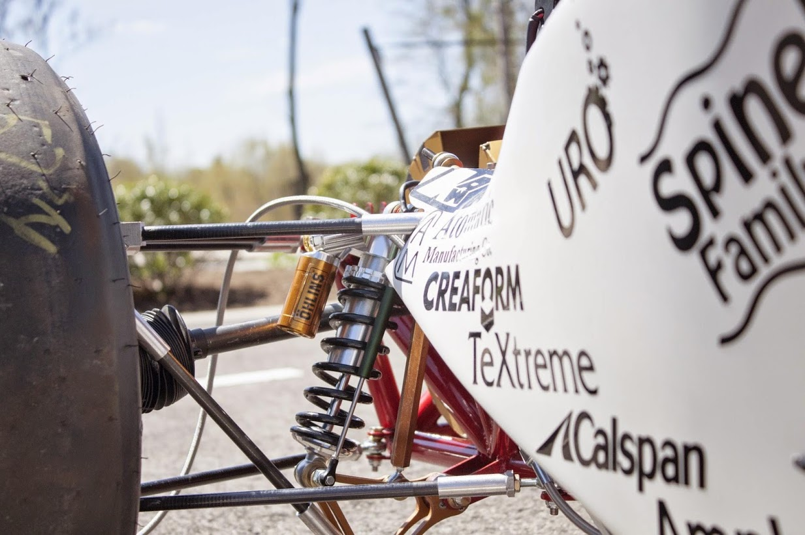
I was responsible for the A-arms, pictured above. The fall semester was dedicated to design and analysis, while the spring semester was dedicated to manufacturing and testing. This included writing several Mastercam CNC programs, and used CNC and manual mills and lathes for prototyping. The parts were finally welded and epoxied into their final setup on the car.
Motorola Mobility
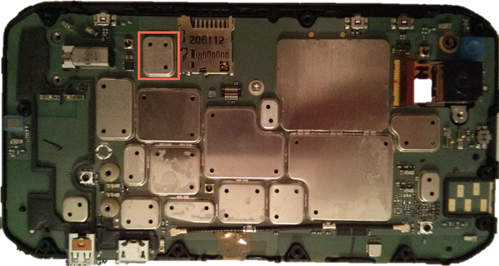
As a Design Engineer Intern in product development at Motorola, I worked on the following:
- I was responsible for designing the PCB shields for a Motorola smartphone, interfacing with the electrical team on PCB component placement. This was followed by working with various suppliers for manufacturability and cost reduction.
- I conducted ALT (Accelerated Life Testing) on many prototype models to collect and analyze data to complement simulation data to inform design changes for future prototypes.
- I tested display/lens shattering and cracking on a large sample of devices. By observing shatter characteristics as a function of various dimensions in the glass cutouts, I formulated an empirical model that can be used to predict the lens shattering feasibility for devices in ongoing development.
Note: The specifics of the device are covered under an NDA, so the image shown is taken the final release variant, displayed here for illustration purposes.
Motorola Mobility
2019, we have successfully treated over 130 patients.
- Thefor the design, testing, and verification of the component.
- Thewere integral to iterating the design.
- Thetesting, and verification of the assembly.
Lunar Rover

This project focused on the development of the CMU-Astrobotic Lunar Rover, in pursuit of the $20 Million Google XPrize. We were awarded $1.5 Million in prize money. The XPrize was eventually closed without a winner.
I was an active member in developing Andy 3.0, our protoflight rover considered to be our first space-ready robot.
I additionally served as the leader of six engineers on the camera systems team. The designed camera head was been tested for navigation and data collection. Further optimizations will be focused in reduction of camera-head mass while maintaining the current rigidity.
In leading the team, I gained many valuable experiences beyond mechanical design. My position required frequent interfacing with other functional teams. I helped me to gain a global perspective of the project and to understand the necessary compromises in balancing our own deliverables against constraints from other teams. This leadership position also allowed me to appreciate the contributions of others and understand the importance of motivating each member.
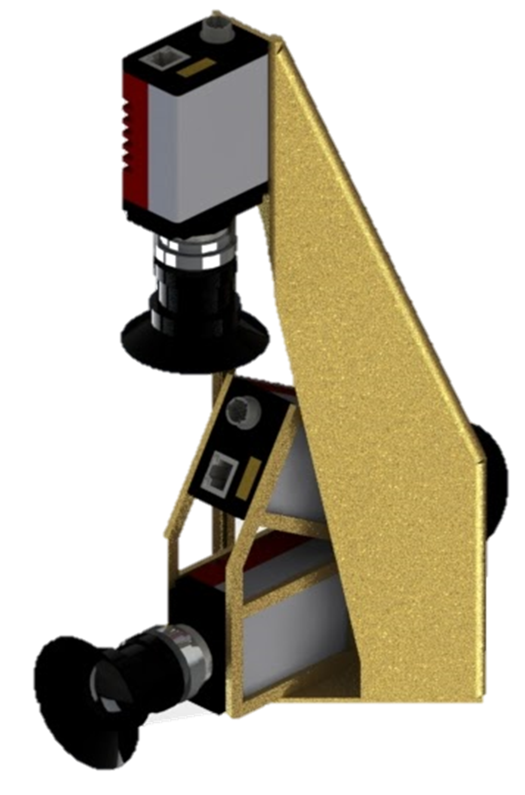
Key specifications include:
- Simple manufacturing for rigidity and cost
- Simple mechanism to minimize failure points
- 360˚ hazard detection
- Easy navigation (necessitated design and manufacture of viewing structure for natural, intuitive usage)
- HD view into the depths of Lacus Mortis (lunar pit with lava tubes)
- Panoramic imaging ability with .3 milliradians/pixel resolution, centered on the horizon
- Natural frequency above 75 Hz, and different from the mast and chassis natural frequencies
- Fisheye lens in line with the solar panel to minimize obstruction
- Structure with negligible camera occlusion
- Various visual design requirements to fit with the rover design language
- Operation in lunar conditions
Praying Mantis
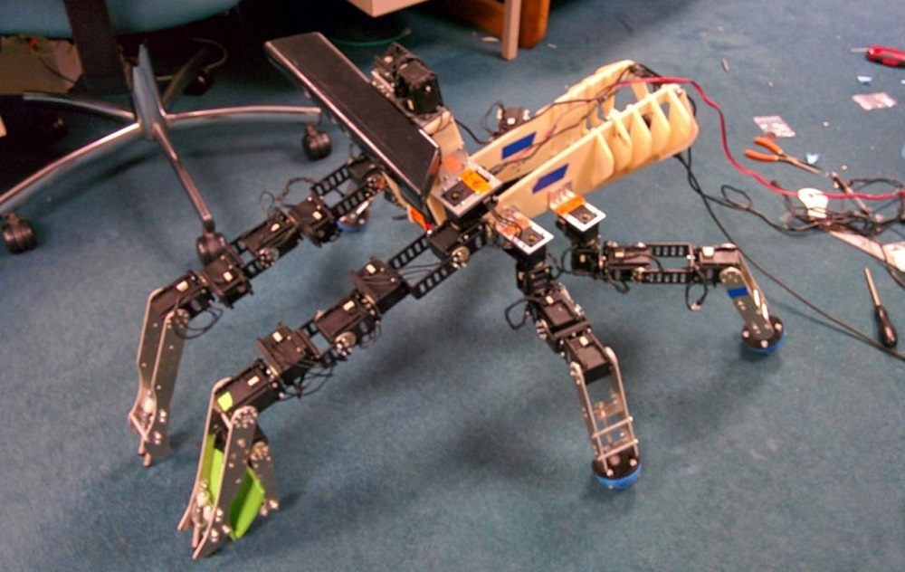
This robot was designed with a vision to create a simple robotic system that is low cost and robust as a learning platform for robotics education.
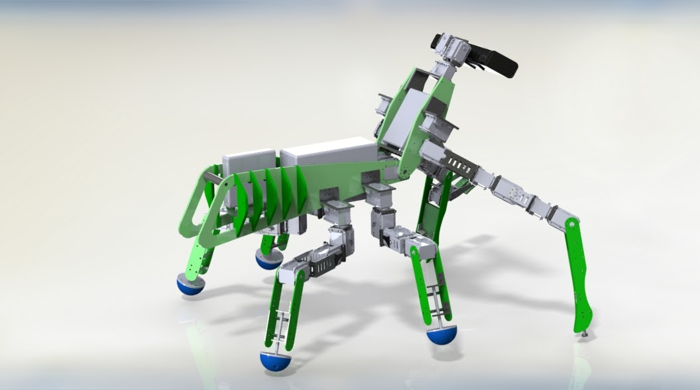
Like a praying mantis, this robot has 6 legs. With a goal to keep the cost under $25,000 in its final form, we experienced many constraints in our designs of the robot. With this design, the robot could stand on the 4 rear legs while using the 2 front legs for manipulation, then bend forwards to use all 6 legs for locomotion. This would distribute the strain on each of the servos relatively evenly.
I optimized for speed and range of movement, while minimizing stress on the servos. Objectives include:
- Complete redesign of limbs and body.
- Machining and assembly of robot.
- Created mathematical model using Denavit-Hartenberg parameters.
- Created new visual models for robot emulation and debugging .
- Bugfixes and tuning for basic movements.
Father-Son Club
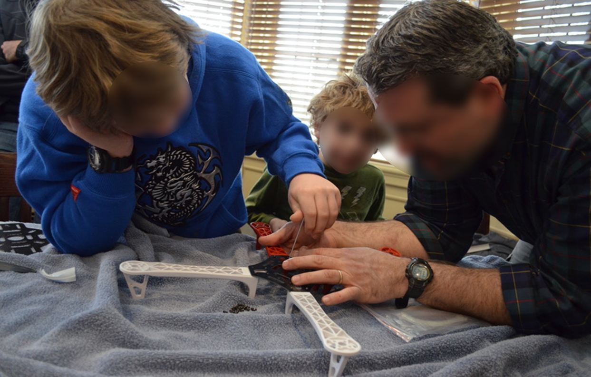
The father-son club at Warwick Foundation is a team-building hobby club. In this club, a father and son team works together to build a quadcopter drone, through which they learn and work together.
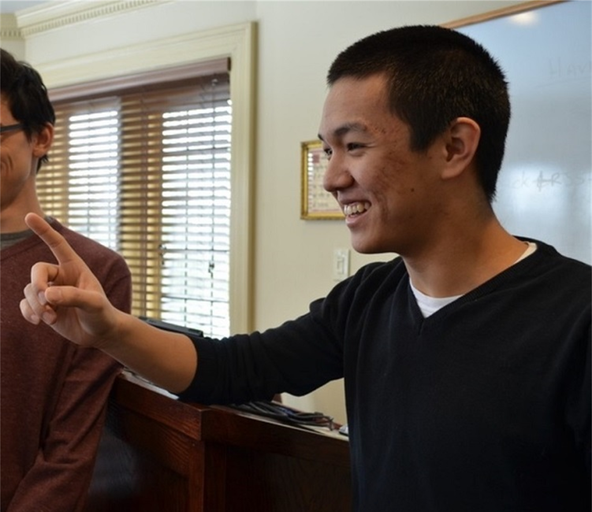
I helped run the club as an engineering instructor and mentor by giving lectures on basic applied physics (fundamentals about brushless motors and propeller design, etc.), keeping in mind the nontechnical audience. I provided individual tutoring throughout the building process, teaching children and parents how to solder and program. The lessons concluded with short talks on how to build character, e.g. friendship, self-discipline, hard-work.
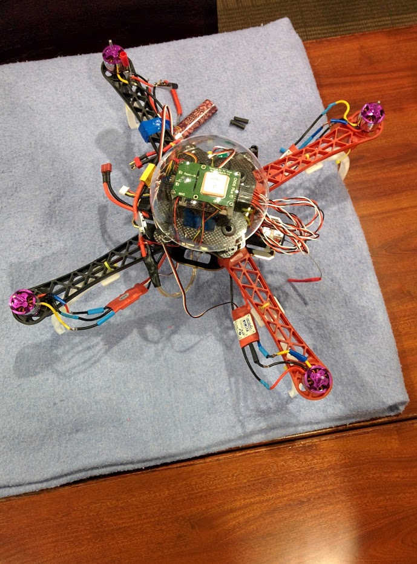